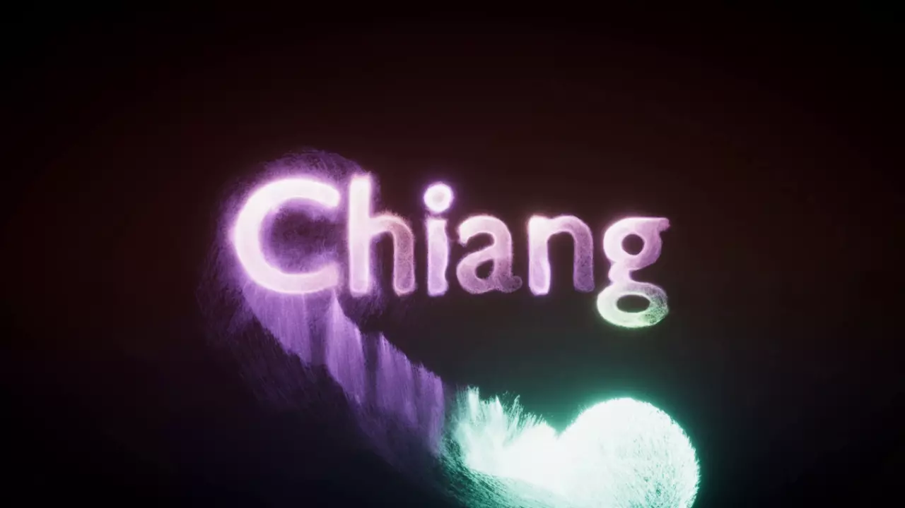
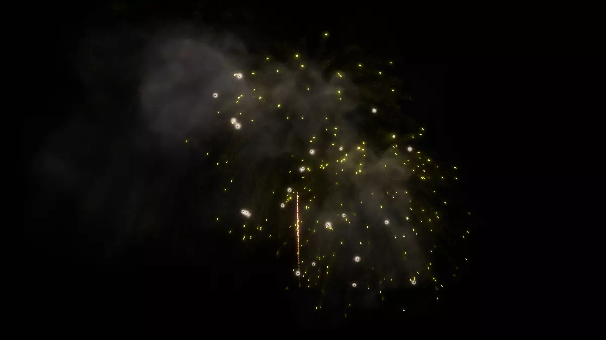
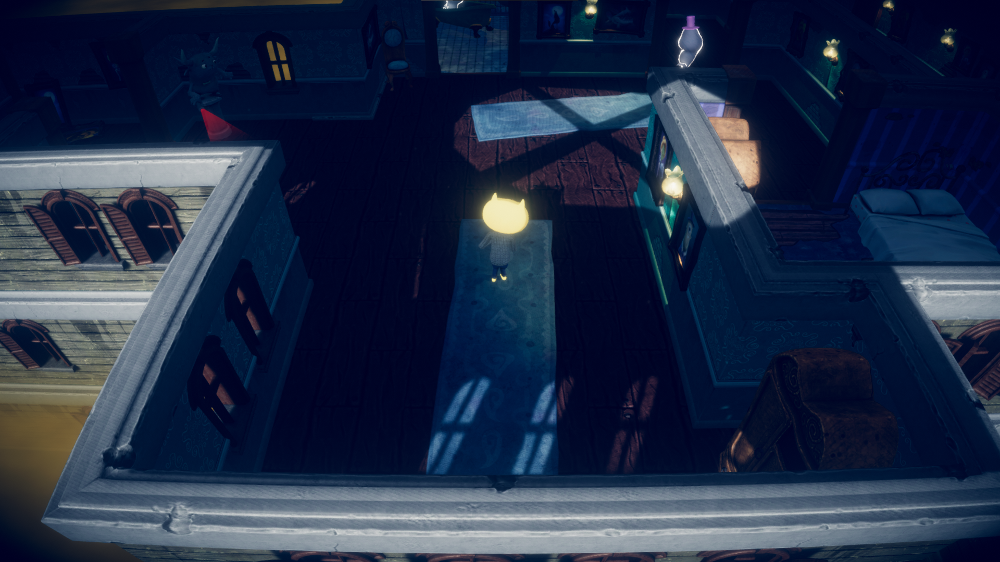
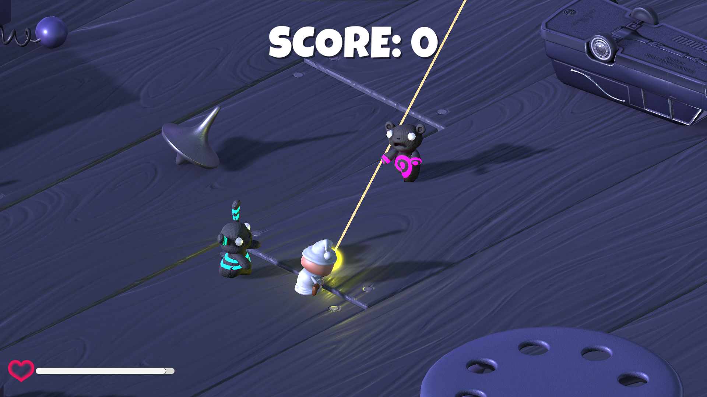
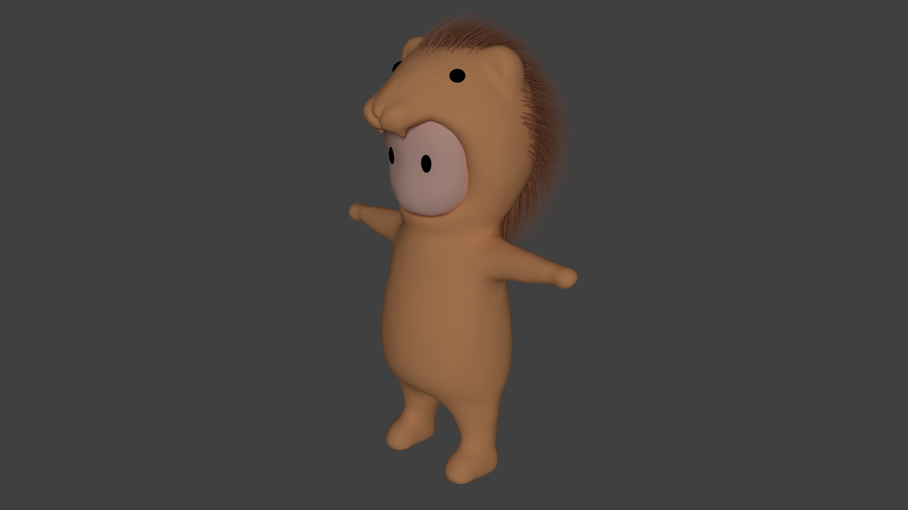
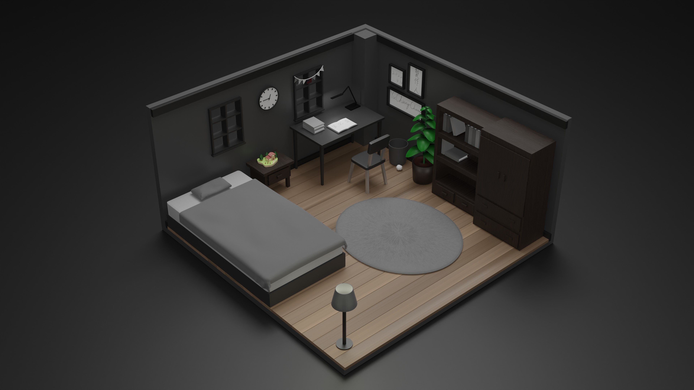

作品集
遊戲作品


Unity Visual Effect Graph測試
使用Visual Effect Graph製作粒子特效。
製作工具：Unity
Unreal Engine 5佈景測試
摸索Unreal Engine 5，並使用Quixel Bridge資源在Unreal Engine內隨意佈景。
製作工具：Unreal Engine 5

DOTS架構實作練習
使用ECS架構進行程式撰寫，使自己對ECS有了了解，並將程式碼修改為0.50版本，使遊戲可以正常運行。也稍微學習了Shader Graph(圖中類似火焰的地方)，並將球加上VFX。
製作工具：Unity
教學連結

John Lemon's Haunted Jaunt 教學專案作品
遊戲試玩：
John Lemon's Haunted Jaunt 教學專案作品
在此教學中，學習到了如何編寫操控角色，環境的燈光調整，與使用Cinemachine來使相機追蹤角色，並使用Post-Processing幫鏡頭加上特效。 也學習放置靜態與動態的敵人與其導航網格(AI)功能，來控制動態敵人的移動。
而我也嘗試自己加了一個選單場景，以用於控制遊戲的開始，而非直接進入遊戲場景。使用TextMesh Pro來使文字有更好的畫質。
製作工具：Unity
教學連結

Survival Shooter 教學專案作品
遊戲試玩：
Survival Shooter 教學專案作品
在此教學中，學習到了如何製作UI，利用相機投射到網格並將值傳到角色身上使角色旋轉，並編寫生命值與傷害等功能，並在遊戲中生成敵人與用Audio Mixer調整音效。
也試著自己利用它提供的資源寫暫停的功能。
製作工具：Unity
教學連結
模型作品

製作工具：blender

製作工具：blender
網頁作品
此作品集網站就是我的作品之一，因為想學會如何撰寫網頁，所以就寫了自己的作品集網站。
並且使用webpack進行打包，與使用GitHub Pages發布。